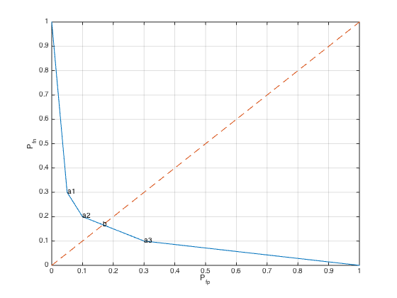

% Figure 7.4 % Boyd & Vandenberghe "Convex Optimization" % Original version by Lieven Vandenberghe % Updated for CVX by Michael Grant, 2005-12-19 % Generate the data P = [0.70 0.10 0.20 0.10 0.05 0.70 0.05 0.10]; [n,m] = size(P); % Construct the tradeoff curve by finding the % the Pareto optimal deterministic detectors, % which are the curve's vertices nopts = 1000; weights = logspace(-5,5,nopts); obj = [0;1]; inds = ones(n,1); % minimize -t1'*q1 - w*t2'*q2 % s.t. t1+t2 = 1, t1,t2 \geq 0 next = 2; for i = 1 : nopts, PW = P * diag( [ 1 ; weights(i) ] ); [ maxvals, maxinds ] = max( PW' ); % max elt in each row if (~isequal(maxinds', inds(:,next-1))) inds(:,next) = maxinds'; T = zeros(m,n); for j=1:n T(maxinds(1,j),j) = 1; end; obj(:,next) = 1-diag(T*P); next = next+1; end; end; plot(obj(1,:), obj(2,:),[0 1], [0 1],'--'); grid on for i=2:size(obj,2)-1 text(obj(1,i),obj(2,i),['a', num2str(i-1)]); end; % Minimax detector: not deterministic cvx_begin variables T( m, n ) D( m, m ) minimize max( D(1,2), D(2,1) ) subject to D == T * P; sum( T, 1 ) == 1; T >= 0; cvx_end objmp = 1 - diag( D ); text( objmp(1), objmp(2), 'b' ); xlabel('P_{fp}'); ylabel('P_{fn}'); %print -deps roc.eps
Calling SDPT3 4.0: 10 variables, 5 equality constraints
------------------------------------------------------------
num. of constraints = 5
dim. of linear var = 10
*******************************************************************
SDPT3: Infeasible path-following algorithms
*******************************************************************
version predcorr gam expon scale_data
NT 1 0.000 1 0
it pstep dstep pinfeas dinfeas gap prim-obj dual-obj cputime
-------------------------------------------------------------------
0|0.000|0.000|1.3e+01|1.4e+01|1.0e+03| 2.000000e+01 0.000000e+00| 0:0:00| chol 1 1
1|1.000|1.000|4.3e-06|1.0e-01|4.6e+01| 9.382551e+00 -3.532711e+01| 0:0:00| chol 1 1
2|1.000|0.971|9.4e-07|1.3e-02|1.2e+00| 5.905323e-01 -5.324106e-01| 0:0:00| chol 1 1
3|0.963|1.000|4.9e-08|1.0e-03|2.5e-01| 2.572625e-01 1.055711e-02| 0:0:00| chol 1 1
4|1.000|0.922|7.7e-09|1.7e-04|3.8e-02| 1.821755e-01 1.443686e-01| 0:0:00| chol 1 1
5|0.985|0.934|2.6e-09|2.1e-05|1.9e-03| 1.671952e-01 1.653329e-01| 0:0:00| chol 1 1
6|0.988|0.988|2.3e-10|1.2e-06|2.4e-05| 1.666732e-01 1.666530e-01| 0:0:00| chol 1 1
7|0.989|0.989|1.2e-11|1.4e-08|2.6e-07| 1.666667e-01 1.666665e-01| 0:0:00| chol 1 1
8|0.999|0.994|6.4e-14|8.4e-11|4.1e-09| 1.666667e-01 1.666667e-01| 0:0:00|
stop: max(relative gap, infeasibilities) < 1.49e-08
-------------------------------------------------------------------
number of iterations = 8
primal objective value = 1.66666668e-01
dual objective value = 1.66666664e-01
gap := trace(XZ) = 4.08e-09
relative gap = 3.06e-09
actual relative gap = 2.88e-09
rel. primal infeas (scaled problem) = 6.45e-14
rel. dual " " " = 8.41e-11
rel. primal infeas (unscaled problem) = 0.00e+00
rel. dual " " " = 0.00e+00
norm(X), norm(y), norm(Z) = 1.9e+00, 3.5e-01, 8.9e-01
norm(A), norm(b), norm(C) = 4.3e+00, 3.0e+00, 2.2e+00
Total CPU time (secs) = 0.08
CPU time per iteration = 0.01
termination code = 0
DIMACS: 9.7e-14 0.0e+00 9.4e-11 0.0e+00 2.9e-09 3.1e-09
-------------------------------------------------------------------
------------------------------------------------------------
Status: Solved
Optimal value (cvx_optval): +0.166667
